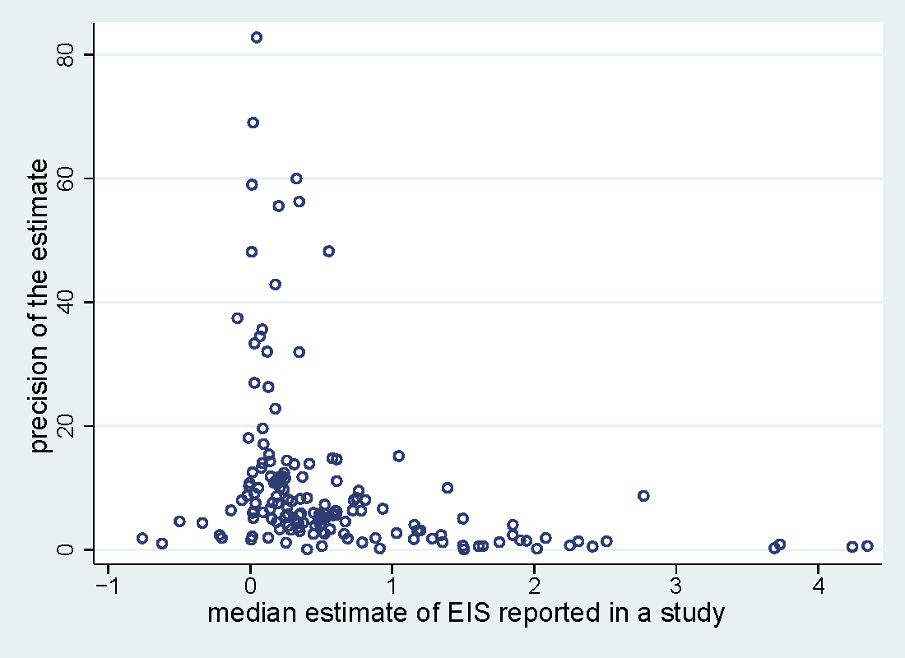
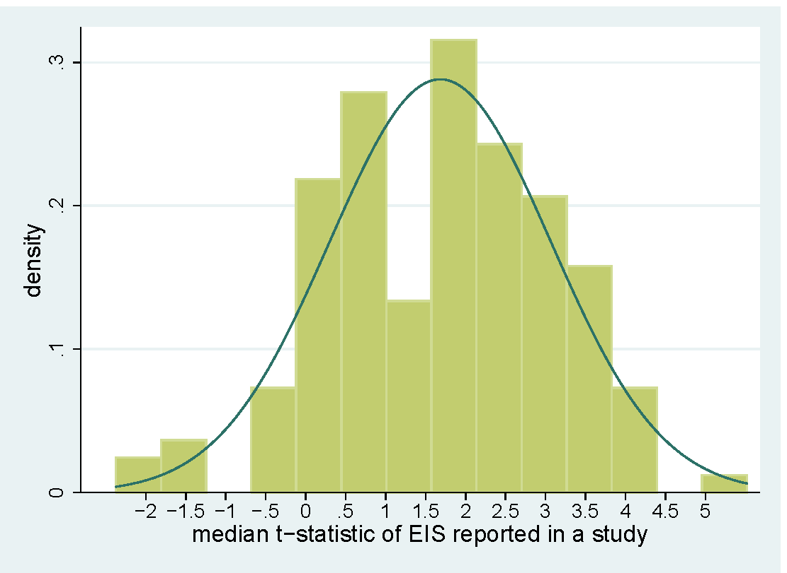

Abstract
I examine 2,735 estimates of the elasticity of intertemporal substitution in consumption (EIS) reported in 169 published studies. The literature shows strong selective reporting: researchers discard negative and insignificant estimates too often, which pulls the mean estimate up by about 0.5. The reporting bias dwarfs the effects of methods, with the exception of the choice between micro and macro data. When I correct the mean for the bias, for macro estimates I get zero, even though the reported t-statistics are on average two. The corrected mean of micro estimates of the EIS for asset holders is around 0.3-0.4. Calibrations greater than 0.8 are inconsistent with the bulk of the empirical evidence.
Negative estimates of the elasticity are underreported ...

... and so are marginally insignificant estimates.

Reference: Tomas Havranek (2015), "Measuring Intertemporal Substitution: The Importance of Method Choices and Selective Reporting." Journal of the European Economic Association 13(6), 1180-1204.